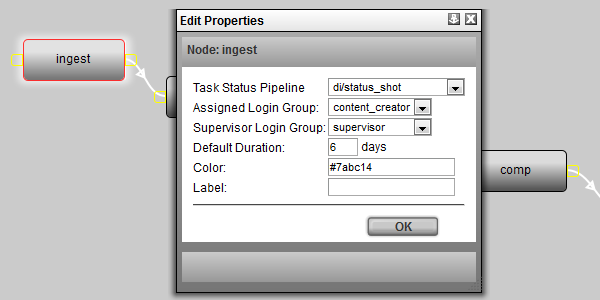

Each node has a number of properties that can be set. These properties may be used by TACTIC to derive useful information. These properties are:
Task Status Pipeline - Selects from a list of 'Task Status Pipelines' to connect the selected process to. This accommodates a separate set of statuses for the specific process. These pipelines are defined the same way other pipelines are. The only difference is that these pipelines are assigned to the sthpw/task sType. This property represents the "code" property of the task pipeline.
Assign Login Group - Specifies the process to a particular group of artists.
Supervisor Login Group - Specifies the process to a particular group of supervisors.
Duration - Set the a duration schedule (in days) of the process.
Color - The color to represent the process in the GUI. For example the Task Status Widget can be setup to display the color of the process.
Label - Add a label for the process.
Pipeline Code - eg. project/asset.
Process - eg. design, rough, finale, delivery, etc.
Search Type - eg. project/asset
Checkin Mode - File | Directory | Sequence | Multiple Files.
Checkin Validate Script Path - Path to a script which is run upon checkin for validation.
Checkin Options View - Advanced custom layout to be used for checkin view.
Subcontext - eg. hi_res, low_res, etc.
To open the Edit Properties pop-up, select a node and then click on the Properties button on the tools shelf:
